Video's
Instructievideo's, webinars en presentaties over Faster Forward Elements en eBlinqx. Video's worden pas van YouTube of Vimeo geladen als je op afspelen klikt.
Op zoek naar de interactieve instructies? Die staan op de pagina E-learning. Alle instructievideo's van FinRust vind je op FinRust-video's.
Quinn en AI
Quinn Mail in 90 seconden: zo gebruik je het
Blinqx Verzekering & Hypotheek · 1:19 · 4 november 2026
Wat is QuinMail en hoe werkt het
Blinqx Verzekering & Hypotheek · 5:48 · 29 oktober 2026
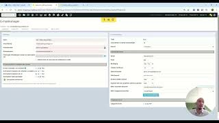
Uitleg over AI-instellingen en mailboxen
Blinqx Verzekering & Hypotheek · 5:49 · 29 oktober 2026
E-mails beantwoorden met AI
Blinqx Verzekering & Hypotheek · 6:13 · 29 oktober 2026
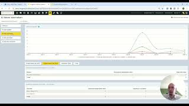
Inzicht in AI-verbruik voor jouw kantoor
Blinqx Verzekering & Hypotheek · 4:38 · 29 oktober 2026
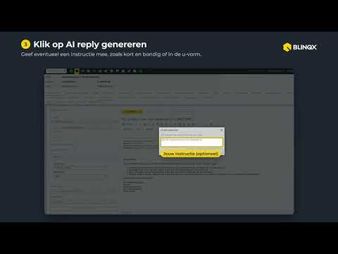
E-mails beantwoorden met Quinn Mail
Blinqx Verzekering & Hypotheek · 0:52 · 21 oktober 2026
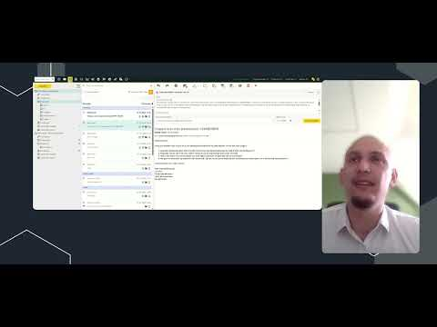
Wat is Quinn Mail en hoe werkt het?
Blinqx Verzekering & Hypotheek · 5:48 · 15 oktober 2026
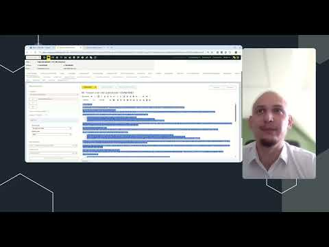
E mails beantwoorden met Quinn Mail (AI)
Blinqx Verzekering & Hypotheek · 6:13 · 15 oktober 2026
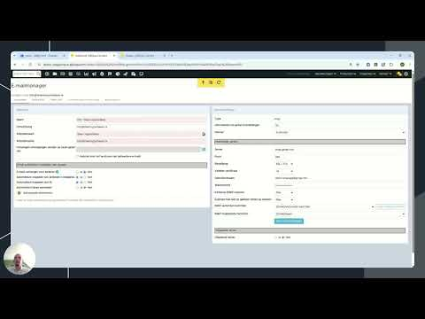
Uitleg over AI instellingen en mailboxen
Blinqx Verzekering & Hypotheek · 5:49 · 15 oktober 2026
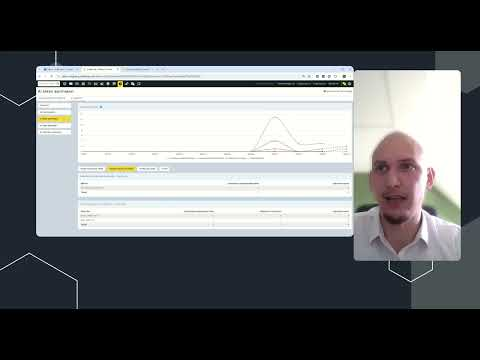
Inzicht in AI verbruik voor jouw kantoor
Blinqx Verzekering & Hypotheek · 4:38 · 15 oktober 2026
Evenementen en podcast
Business Boost - De Podcast - Dennes Roes en Gijs van Hooijdonk
Blinqx Verzekering & Hypotheek · 27:42 · 19 augustus 2026
Business Boost de podcast afl 2 - Jesse van Ekeren
Blinqx Verzekering & Hypotheek · 46:38 · 23 juni 2026
Business Boost - De Podcast - afl 1 Milan Verzijlbergh
Blinqx Verzekering & Hypotheek · 24:45 · 29 april 2026
Faster Forward op de HypoVak 2019
FasterForwardTV · 1:25 · 3 juni 2019
Automatisch verlagen risico-opslag (Hypotheekbond bij Radar, 2019)
Nationale Hypotheekbond · 3:43 · 15 januari 2019
Gouden Lotus 2018 gewonnen door de Nationale Hypotheekbond
De Nationale Hypotheekbond · prijs in ontvangst genomen door Jos van Driesum · 0:44 · 2018
Premies overlijdensrisico te duur (Kassa, 2016)
Kassa (BNNVARA) met Jos van Driesum, Wouter Abbink en Jeroen Oversteegen · 17:53 · 2016
Faster Forward gebruikersevenement
FFWDelements · 1:41 · 16 april 2012
Koppelingen met partners
UwKluis / Online klantportaal - Veilig Ophalen
Nationale Hypotheekbond · 2:54 · 11 april 2023
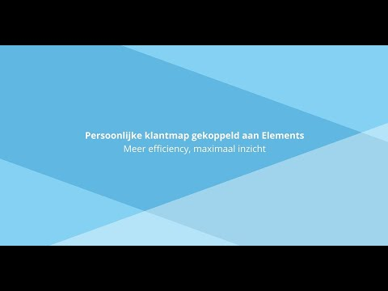
De Assurantie App gekoppeld aan Faster Forward Elements
Business Apps · 1:25 · 10 augustus 2021
Telefonie integratie met Faster Forward Elements | Dstny
Dstny NL · 1:53 · 9 juli 2021
Webinars en presentaties
December presentatie nieuwe Elements features
FasterForwardTV · 15:06 · 3 januari 2023
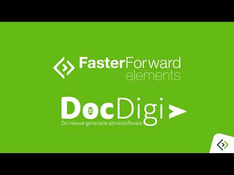
Eenvoudig gegevens uitwisselen tussen Elements en DocDigi
FasterForwardTV · 2:05 · 11 april 2022
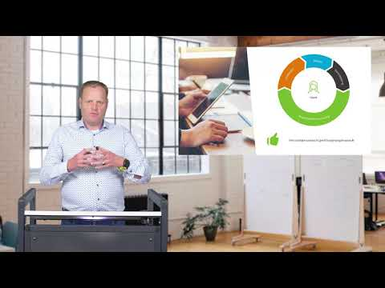
Wetgeving en tips voor klantonderhoud door Bureau DFO en Faster Forward
FasterForwardTV · 31:25 · 22 juni 2021
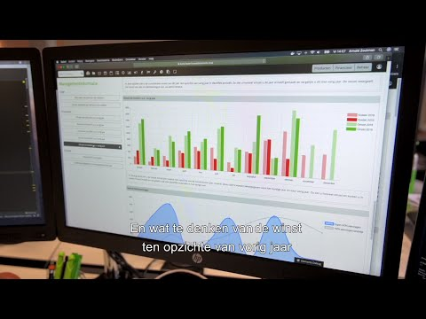
Elements Insights: maximaal inzicht in managementinformatie
FasterForwardTV · 1:07 · 27 november 2019
Inzicht in omzetcijfers, kan dat makkelijker?
FasterForwardTV · 1:12 · 19 november 2019
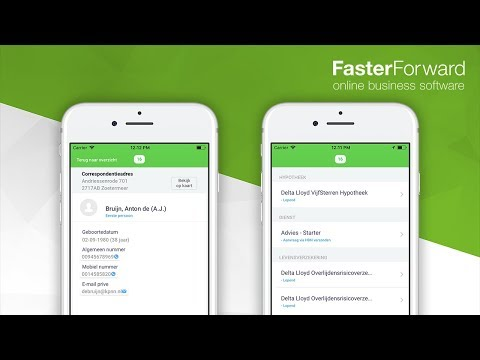
Klantgegevens altijd bij de hand met Faster Forward On Route
FasterForwardTV · 1:45 · 25 mei 2018
Over Elements en eBlinqx
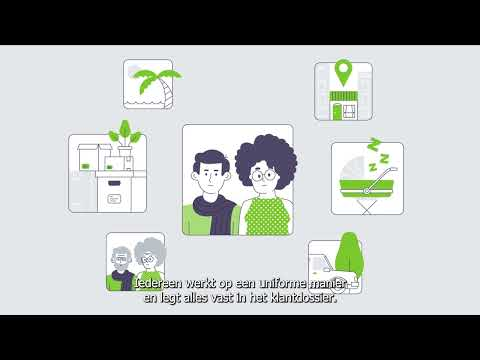
Efficiënt werken met Faster Forward Elements (ondertiteld)
FasterForwardTV · 1:33 · 28 maart 2022
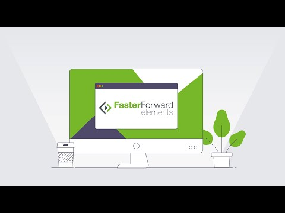
Meer gemak en overzicht met Faster Forward Elements
FasterForwardTV · 1:33 · 18 januari 2022
Elements: efficiënt samenwerken met klanten en collega's
FasterForwardTV · 1:06 · 4 december 2018
eBlinqx Explainer
Blinqx
Instructievideo's
Elements SMART: selecties en acties
FasterForwardTV · 4:18 · 4 februari 2021
Hoe maak ik een dossier aan
FasterForwardTV · 2:40 · 12 december 2019
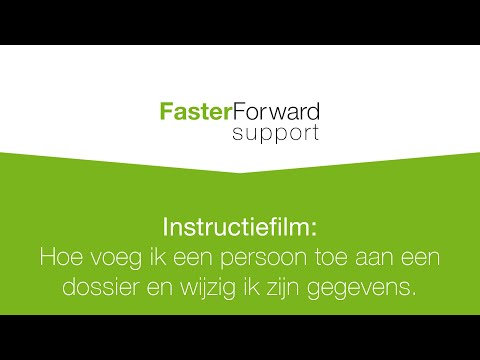
Hoe voeg ik een persoon toe en wijzig ik persoonsgegevens
FasterForwardTV · 1:30 · 12 december 2019
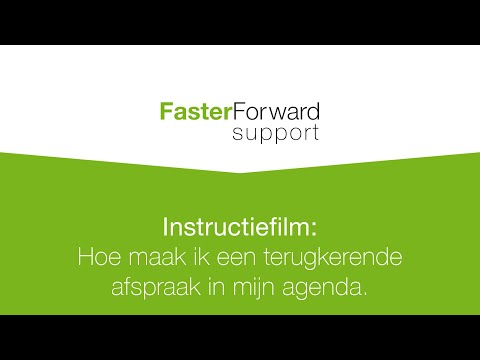
Hoe maak ik een terugkerende afspraak in mijn agenda
FasterForwardTV · 0:49 · 12 december 2019
Hoe nodig ik een collega uit bij een afspraak
FasterForwardTV · 0:53 · 12 december 2019
Hoe archiveer ik een product
FasterForwardTV · 1:15 · 12 december 2019
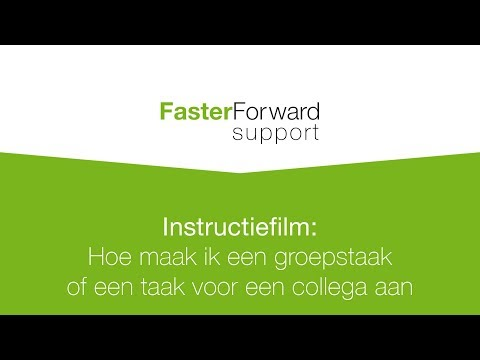
Hoe maak ik een groepstaak of een taak voor een collega (2019)
FasterForwardTV · 1:43 · 17 januari 2019
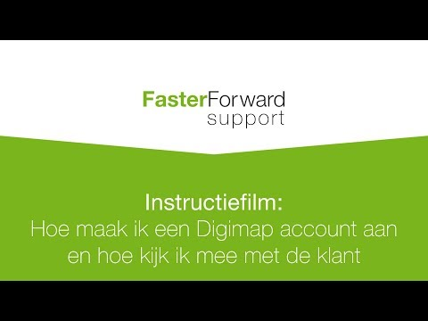
Hoe maak ik een Digimap aan en kijk ik mee met de klant
FasterForwardTV · 1:27 · 23 oktober 2018
Het Elements dashboard
FasterForwardTV · 3:29 · 23 april 2018